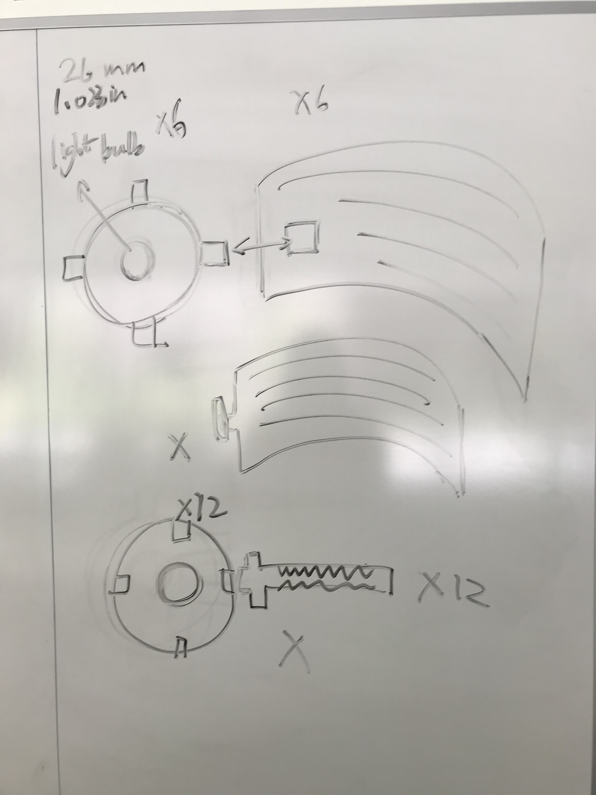
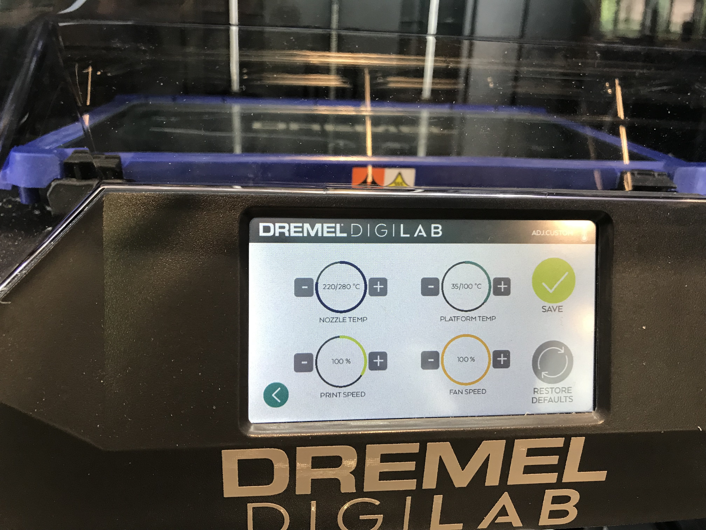
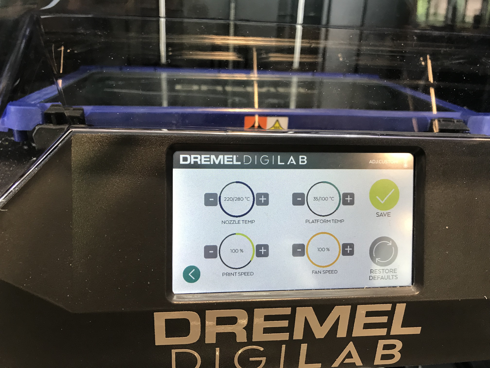

Huan's Lamp!

Ideation
I ideated several ideas on the whiteboard, and iterated based on feasiblity and desirability.

Trials and Errors
Then I started to use Rhino to create the shapes. It is a fun learning process, following Nadya's wonderful tutorial. Some mistakes I made during the process include forgetting to draw a hole in the middle to let the lamp socket get through. Building 3D models on Rhino for the first time was also challenging for me. So I went back and forth and finally build the one that I liked.
Based on my ideation, the thickness of my socket is 52 mm, which could fit my bulb in. Also, according to Joshua's suggetion, I set the thickness of the 3D model to be 0.3mm. Accordingly, the depth of the fit-in of the lamp pieces are also 0.3mm.
Execution
Then, learning that 3D printing take a much longer time, I printed my 3D model first. The first mistake I made was forgetting to try the fillament before printing, so for my first tiral, the fillament did not come out. The printer just made empty shapes on the glue lol.

For a second trial, I followed the procedures correctly. However, I did not put enough glue, so that my first prototype failed in the middle of printing.

Finally, for the last trial, my 3D model got printed (very slowly!). I used the setting recommended by the Mill staff and it worked well. Here is what it looked like with the lamp cord!
 

Then I laser cut my lamp pieces. Laser cutting was so much easier and familiar for me now! Based on the thickness of my cardboard, my setting are: speed-25; power-100; frequency-70.
Demonstration
Source File. Source File. Source File.
Thanks Dawn for answering my questions at the Mill! Thanks Nadya for providing the tutorial.